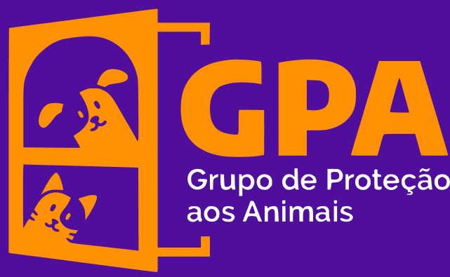
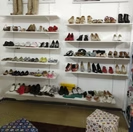
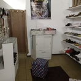
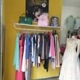
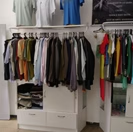
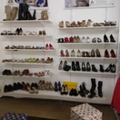
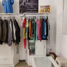
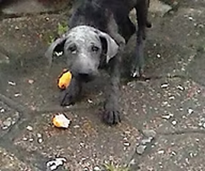
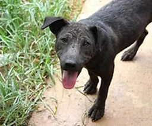

Caso Cananeia
Em uma operação conjunta do GPA, da ONG Amicao da Ilha Comprida e a Polícia Ambiental, foram resgatados 54 cães que viviam em situação de extremo sofrimento nas mãos de um colecionador de animais.
Confinados, muitos deles viviam sem água, comida, em cubículos escuros, cheios de fezes e urina, com pavor de pessoas. Muitos doentes, não tinham sem nenhum tipo de assistência veterinária. A equipe de resgate encontrou filhotes confinados em caixas pisando em urina, sem água e alimento. Com fome, os cães mais fortes matavam os menores para comê-los. De acordo com relatos, o holocausto animal acontece há mais de dez anos em Cananéia.
Video Emocionante
Esse vídeo retrata um pouco no nosso trabalho. Resumi nossas ações onde transformamos essas vizinhas.
Em cada resgate, onde nos deparamos com aquele olhar de medo, dor, de fome, de tristeza...quando conseguimos vencer e recontar a história de cada um deles é a nossa maior alegria. E é pelo que lutamos. Para dar a cada um deles uma vida digna, cheia de muito amor, carinho e respeito.
Que esse vídeo possa tocar muitos corações e juntos possamos recontar muitas histórias.
Esse vídeo é uma homenagem a todos, que de alguma forma, ajudam os animais abandonados.
Uma homenagem aos nosso peludos, pois com eles aprendemos o verdadeiro significado da palavra amor. Um amor puro, incondicional, que não nos pede nada em troca.
Brechó do GPA
O Gpa possui um BRECHÓ onde os recursos são revertidos para nossos patudos.
Localizado na rua Capitão João Batista Poci Júnior, 305 no centro de Registro. Lá você encontra roupas, acessórios, sapatos, utensílios domésticos novos e usados. Horário de funcionamento das 09:00 às 18:00 horas de segunda a sábado.
Aceitamos doações. Venham nos fazer uma visita.






Conheça o GPA
Criado em outubro de 2005, o GPA nasceu do sonho de que é possível mobilizar a sociedade para reduzir o abandono e o sofrimento dos animais. Sem fins lucrativos, o grupo é formado por pessoas que amam os animais e não suportam vê-los sofrer.
Venham nos fazer uma visita e conhecer nosso trabalho.
Para saber mais
Programa Nota Fiscal Paulista
Através deste programa, nossos "usuários cadastradores" podem cadastrar seus cupons sem sair de casa.
Clique no link abaixo para obter mais informações e preencher o formulário com seus dados para que possamos torná-lo um cadastrador da entidade.
Antes e Depois
Vejam alguns exemplos do resultado do trabalho de assistência realizado pelo Gpa aos animais abandonados em situações de sofrimento. Com muito amor e dedicação conseguimos apagar de seus corações toda dor e sofrimento e transformar suas vidas.

